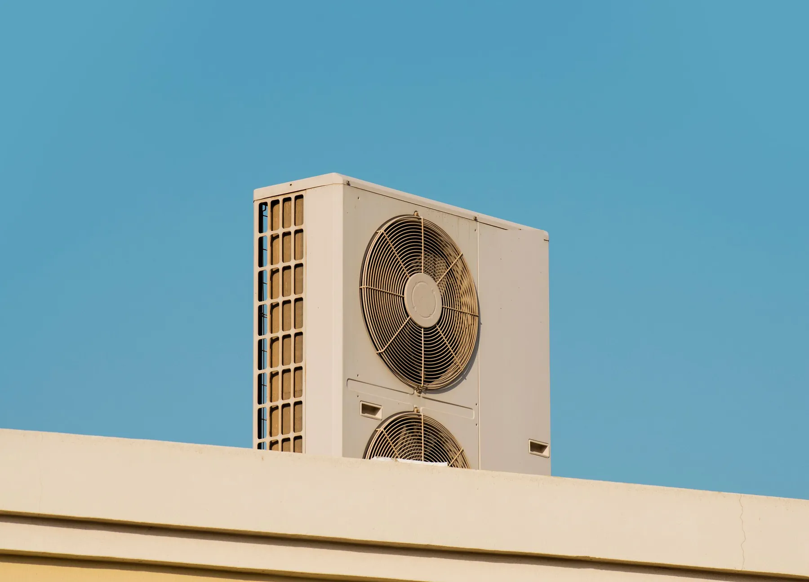

Kondicionēšanas projektēšana un būvuzraudzība
Dzesēšanas slodze, sistēmas izvēle un ārējo bloku vietas. Būvdarbu laikā vadām vai uzraugām izbūvi.
Ko ietver kondicionēšanas projekts
Gaisa kondicionēšana ir būvprojekta AVK daļas sadaļa. Projekts nosaka, cik dzesēšanas vajag, kādu sistēmu izvēlēties un kur novietot iekārtas.
Dzesēšanas slodze
Aprēķinām, cik siltuma telpās rada saule caur logiem, cilvēki, apgaismojums un iekārtas, un cik jaudas vajag, lai to novadītu.
Sistēmas izvēle
Atsevišķi split kondicionieri, multi-split sistēmas vai sistēmas ar mainīgu aukstumaģenta plūsmu (VRF) lielākām ēkām, kā arī dzesēšana caur ventilācijas iekārtu.
Bloku vietas
Iekšējos blokus izvietojam tā, lai gaiss nepūstu tieši uz cilvēkiem, bet ārējos blokus uz fasādes, jumta vai zemes, ņemot vērā troksni, apkopi un ēkas izskatu.
Cauruļvadi un kondensāts
Aukstumaģenta cauruļvadu trases un kondensāta novadīšana no katra iekšējā bloka.
Vadība
Temperatūras vadība pa telpām vai zonām un sasaiste ar ventilāciju un apkuri, lai sistēmas nestrādātu viena pret otru.
Projektā saņemat rasējumus ar iekšējiem un ārējiem blokiem un trasēm, dzesēšanas slodzes aprēķinu pa telpām, iekārtu un materiālu specifikāciju un risinājuma aprakstu.
Ko pārbaudām objektā
Kā būvdarbu vadītājs vai būvuzraugs pārbaudām, vai dzesēšanas sistēmu izbūvē pēc projekta, un apskatām cauruļvadus, pirms tos aizklāj.
-
Iekārtas
Iekšējie un ārējie bloki pēc tipa un jaudas atbilst projektam un ir novietoti paredzētajās vietās.
-
Aukstumaģenta cauruļvadi pirms aizklāšanas
Cauruļvadi ir izolēti un nostiprināti, un to trases atbilst projektam.
-
Kondensāta novadīšana pirms aizklāšanas
Kondensāta caurulēm ir slīpums, un tās ir pievienotas kanalizācijai ar ūdens slēgu vai citai projektā paredzētai vietai.
-
Hermētiskuma pārbaude
Pirms uzpildes sistēmu pārbauda ar spiedienu un vakuumē. Rezultātu ieraksta aktā.
-
Ārējo bloku stiprinājumi
Ārējie bloki ir droši nostiprināti, ar vibrāciju slāpēšanu un brīvu piekļuvi apkopei.
-
Palaišana un dokumenti
Sistēma ir palaista, vadība strādā, un ir iekārtu dokumenti un akti sistēmas nodošanai.
Kādām ēkām
-
Birojiem un veikaliem
Telpām ar lieliem logiem, kurās ir daudz cilvēku un datortehnikas.
-
Tehniskajām telpām
Telpām, kurās iekārtas rada siltumu visu gadu, piemēram, serveru telpām.
-
Ražošanas ēkām
Dzesēšana tur, kur to prasa tehnoloģija vai darba apstākļi.
-
Mājām un dzīvokļiem
Dzesēšana guļamistabām un telpām ar lieliem logiem uz dienvidiem.
Biežākie jautājumi
Vai kondicionierim vajag projektu?
Vienam sadzīves kondicionierim projekts parasti nav vajadzīgs. Ja bloku ir vairāki, ārējie bloki būs uz fasādes vai jumta vai dzesēšana jāsaskaņo ar ventilāciju, projekts palīdz izvēlēties pareizu jaudu un iekārtu vietas. Vai ārējo bloku izvietošanai vajag saskaņojumu, nosaka būvvalde.
Vai kondicionieris var arī sildīt?
Kondicionieri ar siltumsūkņa režīmu var gan dzesēt, gan sildīt. Vai ar tiem pietiek apkurei, rāda siltuma zudumu aprēķins, un to varam izdarīt tajā pašā AVK projektā.
Kur var novietot ārējo bloku?
Uz fasādes, jumta vai zemes, kur ir gaisa plūsma, piekļuve apkopei un troksnis netraucē ne jums, ne kaimiņiem. Daudzdzīvokļu mājās un pilsētu centros izvietojumu var ierobežot noteikumi, tāpēc to pārbaudām jau projektā.
Kā dzesēšana sader ar ventilāciju?
Telpas var dzesēt ar atsevišķiem blokiem vai daļēji caur ventilācijas iekārtu ar dzesētāju. Ja ēkā ir abas sistēmas, tās projektējam kopā, lai tās viena otrai netraucētu.
Pastāstiet par savu objektu
Kāda ir ēka, kur tā atrodas un kas vajadzīgs: projekts, būvdarbu vadīšana vai būvuzraudzība. Atbildēsim un pateiksim, kas vajadzīgs tālāk.